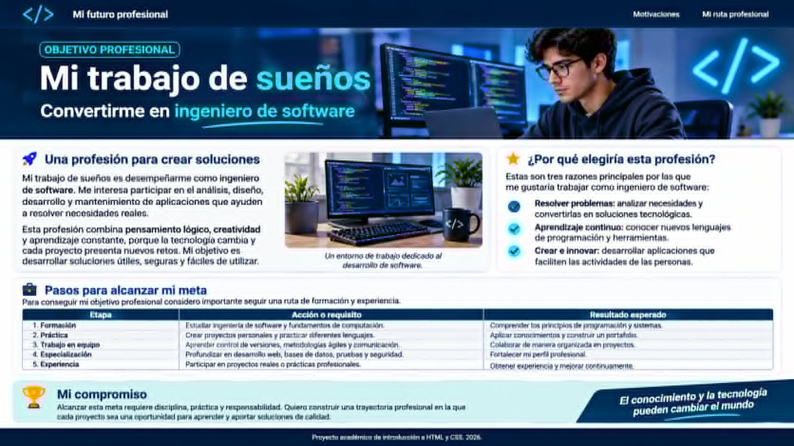

Una profesión para crear soluciones
Mi trabajo de sueños es desempeñarme como ingeniero de software. Me interesa participar en el análisis, diseño, desarrollo y mantenimiento de aplicaciones que ayuden a resolver necesidades reales.
Esta profesión combina pensamiento lógico, creatividad y aprendizaje constante, porque la tecnología cambia y cada proyecto presenta nuevos retos. Mi objetivo es desarrollar soluciones útiles, seguras y fáciles de utilizar.

¿Por qué elegiría esta profesión?
Estas son tres razones principales por las que me gustaría trabajar como ingeniero de software:
- Resolver problemas: analizar necesidades y convertirlas en soluciones tecnológicas funcionales.
- Aprendizaje continuo: conocer nuevos lenguajes de programación, herramientas y metodologías.
- Crear e innovar: desarrollar aplicaciones y servicios que faciliten las actividades de las personas.
Pasos para alcanzar mi meta
Para conseguir mi objetivo profesional considero importante seguir una ruta de formación y experiencia.
| Etapa | Acción o requisito | Resultado esperado |
|---|---|---|
| 1. Formación | Estudiar ingeniería de software y fundamentos de computación. | Comprender los principios de programación y sistemas. |
| 2. Práctica | Crear proyectos personales y practicar diferentes lenguajes. | Aplicar conocimientos y construir un portafolio. |
| 3. Trabajo en equipo | Aprender control de versiones, metodologías ágiles y comunicación. | Colaborar de manera organizada en proyectos. |
| 4. Especialización | Profundizar en desarrollo web, bases de datos, pruebas y seguridad. | Fortalecer mi perfil profesional. |
| 5. Experiencia | Participar en proyectos reales o prácticas profesionales. | Obtener experiencia y mejorar continuamente. |
Mi compromiso
Alcanzar esta meta requiere disciplina, práctica y responsabilidad. Quiero construir una trayectoria profesional en la que cada proyecto sea una oportunidad para aprender y aportar soluciones de calidad.